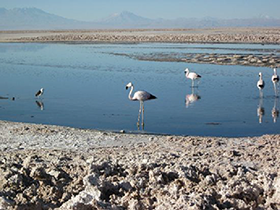
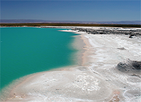
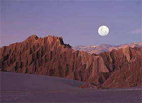
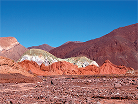

Laguna Chaxa (Chaxa Lagoon)Group TourSurrounded by a crust of salt and in the midst of rough lifeless crystals is an oasis of activity: the pungent Laguna Chaxa, about 65 kilometers (40 miles) south from San Pedro de Atacama, the Reserva Nacional Los Flamencos’ most easily accessible flamingo breeding site. Three of the five known species (James, Chilean and Andean) can be spotted at this salt lake, as well as plovers, coots and ducks: bring zoom lenses and snappy reflexes. Though sunrise is feeding time for the birds and is the best time to see them, it´s also gorgeous at sunset. |
 |
Laguna Cejar (Cejar Lagoon)Optional tour #2 - Accompanying GuestsLaguna Cejar (the floating lagoon) is one amazing location! Set in the northern tip of the Atacama salt pan, 28 kilometers (17 miles) south from San Pedro de Atacama, this location offers a splendid panorama of the Andes, and the possibility to bathe in waters as salty as those of the Dead Sea. This small lagoon has impressive white edges of crystallized salt and is intensely turquoise in color. With a remarkable landscape it is a perfect place for a swim as the salt allows the body to effortlessly float. |
 |
Valle de la Luna (Valley of the Moon)link | videoTour with CareyValle de la Luna is located 13 kilometers (8 miles) west of San Pedro de Atacama in the Cordillera de la Sal, in the Atacama Desert. It has various stone and sand formations which have been carved by wind and water. It has an impressive range of color and texture, looking somewhat similar to the surface of the moon. There are also dry lakes where the composition of salt makes a white covering layer of the area. Valle de la Luna is a part of the Reserva Nacional Los Flamencos and was declared a Nature Sanctuary in 1982 for its great natural beauty and strange lunar landscape, from which its name is derived. The valley is also considered one of the driest places on earth, as some areas have not received a single drop of rain in hundreds of years. Watching the sunset from the exquisite Valley of the Moon is an unforgettable experience. |
 |
Valle del Arcoiris (Rainbow Valley)Optional tour #3 - Accompanying GuestsTravel by coach to the "Hierbas Buenas" petroglyph site for a walking tour which features over a thousand ancient stone carvings from the ancient "Atacameño" people and from different time periods - from the first caravaners to the Incas. On the return, we will visit the village of Rio Grande, a village with original preserved colonial architecture. |
 |